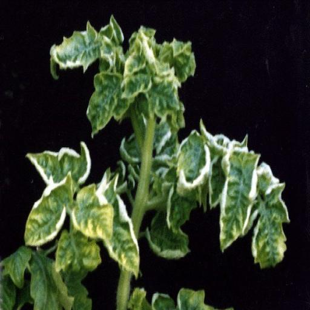
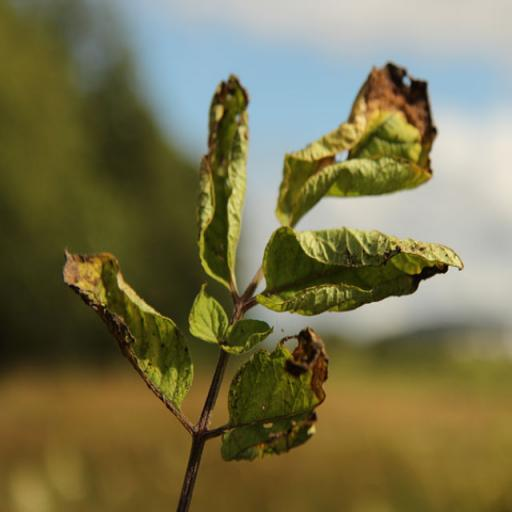

Tomato Mosaic Virus in Tomato
Quick facts
- Tomato Mosaic Virus (ToMV) is a common viral disease in tomatoes.
- It affects leaves, fruits, and stems, reducing the overall yield and quality of the plant.
- Infected plants show mottled leaves, stunted growth, and discolored fruit.
Pesticides
- SAAF Fungicide.
- Indofil M45 Fungicide.
- Antracol Fungicide.
- Nativo Fungicide.
- Amistar Top Fungicide.
Identification
- Leaves may show light and dark green mosaic patterns or mottling.
- Infected plants may exhibit stunted growth and reduced fruit size.
- Fruits can develop irregular ripening or discolored patches.
- In some cases, leaves may become shoestring-like and distorted.
- The virus can survive in contaminated soil or plant debris.

Biology
- Tomato Mosaic Virus is caused by the ToMV virus.
- It can infect tomatoes, peppers, and a variety of other plants.
- The virus spreads through contaminated tools, hands, and insect vectors.
- Disease development is favored by warm temperatures and high humidity.
- The virus can persist in soil, plant debris, and seeds.
- Plants become infected through direct contact with contaminated surfaces.
- Symptoms can develop within days after infection.
- The virus can be spread throughout a field by wind, human contact, or equipment.

Managing Tomato Mosaic Virus
Resistant varieties
- Resistant varieties are available and should be used in areas where Tomato Mosaic Virus is common.
- Resistant plants can tolerate the virus better, resulting in less damage.
- Mulch the soil to reduce the spread of the virus.
- Water at the base of each plant to avoid wetting the leaves.
- Increase airflow by staking plants and spacing them apart.
- Rotate crops and avoid planting tomatoes in the same location each year.
- Keep tools and hands clean to prevent spreading the virus.
- Remove and destroy infected plants immediately.
- Sanitize tools and equipment after working with infected plants.
- Do not handle healthy plants after touching infected ones without washing hands.
- Remove up to one-third of the plant's leaves if the disease is caught early.